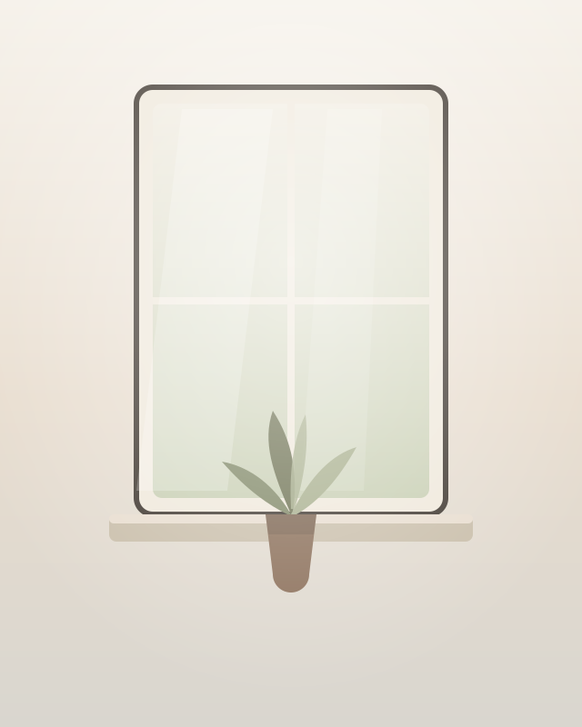
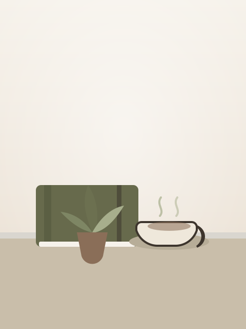

Atendimento online
Sessões por vídeo, com conforto e sigilo.
Há histórias que precisam, antes de tudo, encontrar um lugar onde possam ser escutadas.
Atendimento online para adolescentes e adultos.
Um espaço de escuta para compreender emoções, relações e a própria história.

Existem momentos em que sentimos que repetimos os mesmos caminhos, carregamos angústias difíceis de nomear ou simplesmente percebemos que algo já não faz sentido como antes.
A psicanálise oferece um espaço de escuta cuidadosa para que cada pessoa possa compreender sua própria história e construir novos sentidos para ela.
Sessões por vídeo, com conforto e sigilo.
Um espaço para diferentes momentos da vida.
Cada processo é único e respeita o tempo de cada pessoa.
O atendimento acontece com confidencialidade e respeito.

Sou Giovanna Gimenez, psicanalista clínica. Acredito na escuta como possibilidade de compreender aquilo que, muitas vezes, ainda não encontrou palavras. Minha prática é fundamentada na ética da psicanálise e busca oferecer um espaço de acolhimento, reflexão e elaboração das experiências de cada sujeito.
Textos breves sobre questões que atravessam nossa vida emocional e relacional.
Sobre o tempo acelerado de dentro e o que a escuta pode oferecer a ele.
Leia maisPor que repetimos certas relações e como isso fala da imagem que temos de nós.
Leia maisUm olhar sobre as transformações dessa fase e a importância de um espaço próprio.
Leia maisCada sessão tem duração aproximada de 50 minutos.
As sessões acontecem por vídeo, em um horário combinado, de um lugar onde você se sinta à vontade e com privacidade.
Em geral, os encontros são semanais. A frequência é definida em conjunto, conforme cada processo.
O atendimento é particular. Mediante solicitação, é possível emitir recibo para eventual reembolso.
Você pode entrar em contato pelo WhatsApp ou e-mail para conversarmos e encontrar o melhor horário.
Se sentir que é a hora, estou aqui para oferecer um espaço de escuta e acolhimento, no seu tempo.
Agendar atendimento